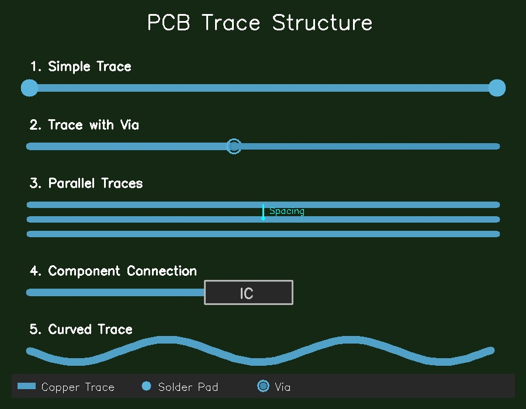

Introduction to PCB Trace Defects
Understanding the fundamentals of printed circuit board trace defects and visual inspection
🔊 Audio Narration
Listen to the audio narration for this page
PCB Trace Defects
PCB traces are copper pathways connecting components on circuit boards. Breaks or cracks in these traces cause device failures. Manufacturing defects include open circuits (complete breaks), shorts (unwanted connections), micro-cracks, and missing traces.
Figure 1: PCB traces connecting various electronic components. Source: Manufacturing inspection guidelines.
This tutorial examines how OpenCV detects these problems without machine learning. The main challenge is that classical computer vision techniques are sensitive to lighting and alignment changes, producing false alarms when boards shift slightly or lighting varies.
Why Visual Inspection is Needed
Visual inspection is needed because:
- Quality Control: Detect defects before boards reach final assembly
- Cost Reduction: Prevent defective products from reaching customers
- Reliability: Ensure device functionality and longevity
- Manufacturing Feedback: Identify process issues for improvement
Manual inspection is slow and inconsistent. Automated systems using OpenCV provide faster, more reliable detection of PCB trace defects.
Main Problems with Classical Methods
The main problems with classical computer vision techniques for PCB defect detection are:
Lighting Sensitivity
- Shadow Effects: Component shadows create false edge detections
- Reflection Variations: Copper surface reflections affect detection
- Non-uniform Illumination: Gradual brightness changes mimic defects
Alignment Issues
- Board Shifts: Slight movements cause template matching failures
- Rotation Errors: Small angles affect geometric measurements
- Scale Variations: Different magnification levels cause false differences
Figure 2: Examples of lighting variations and alignment issues that cause false alarms. Source: Manufacturing inspection case studies.
OpenCV Techniques Covered
This tutorial covers the following OpenCV techniques for PCB defect detection:
- Edge Detection: Finds trace boundaries and detects breaks
- Morphological Operations: Checks trace width and spacing
- Template Matching: Compares boards to reference images
- Color Segmentation: Isolates copper from substrate
- Hough Line Detection: Identifies straight-line segments
These classical methods are faster than machine learning approaches and don't require training data, but they are sensitive to lighting and alignment changes.
# Basic OpenCV setup for PCB inspection
import cv2
import numpy as np
def load_pcb_image(image_path):
"""Load PCB image for inspection"""
image = cv2.imread(image_path)
gray = cv2.cvtColor(image, cv2.COLOR_BGR2GRAY)
return image, gray
def preprocess_image(image):
"""Apply basic preprocessing"""
# Reduce noise
blurred = cv2.GaussianBlur(image, (5, 5), 0)
# Improve contrast
equalized = cv2.equalizeHist(blurred)
return equalized